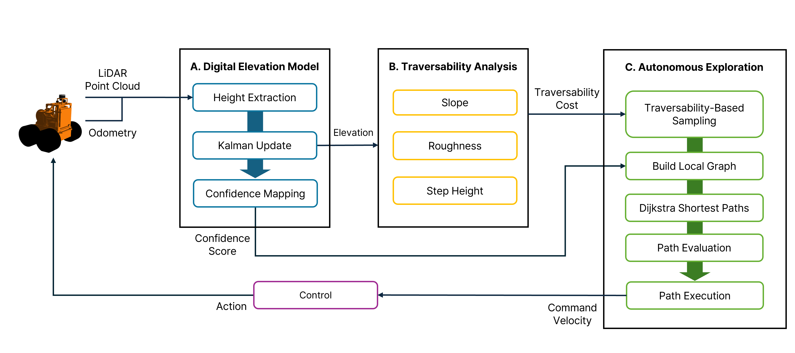
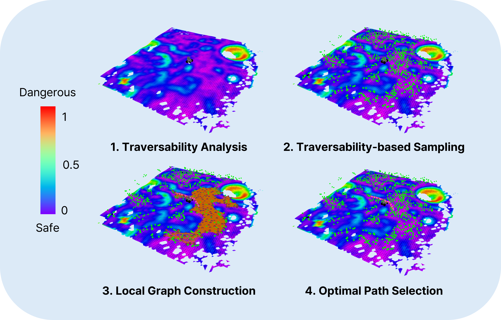
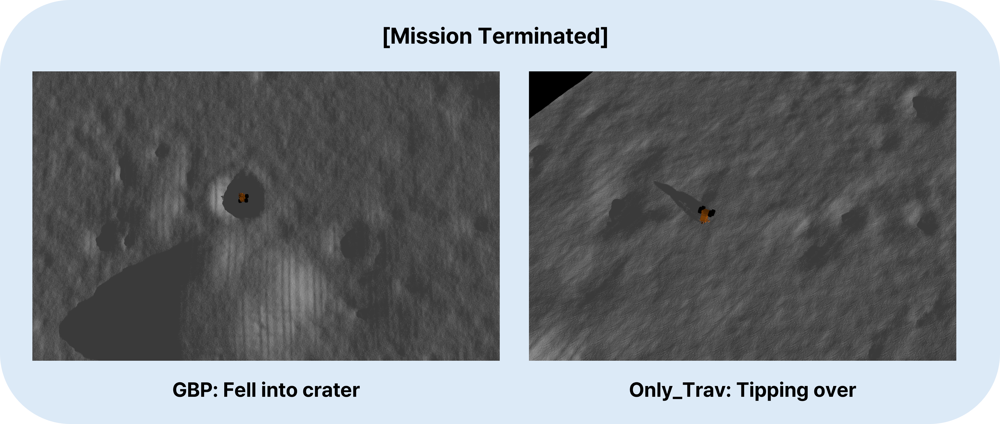

Planetary exploration robots must navigate uneven terrain while building reliable maps for space missions. However, most existing methods incorporate traversability constraints but may not handle high uncertainty in elevation estimates near complex features like craters, do not consider exploration strategies for uncertainty reduction, and typically fail to address how elevation uncertainty affects navigation safety and map quality. To address the problems, we propose a framework integrating safe path generation, adaptive confidence updates, and confidence-aware exploration strategies. Using Kalman-based elevation estimation, our approach generates terrain traversability and confidence scores, then incorporates them into Graph-Based exploration Planner (GBP) to prioritize exploration of traversable low-confidence regions. We evaluate our framework through simulated lunar experiments using a novel low-confidence region ratio metric, achieving 69% uncertainty reduction compared to baseline GBP. In terms of mission success rate, our method achieves 100% while baseline GBP achieves 0%, demonstrating improvements in exploration safety and map reliability.

Overview of the proposed confidence-aware exploration framework. The digital elevation model estimates elevation and confidence using Kalman update. The traversability analysis module evaluates terrain difficulty from slope, roughness, and step height, and the autonomous exploration module plans and executes safe, efficient paths by integrating traversability cost and confidence score.

The figure illustrates the core stages of the proposed planner.
This video presents a comparative analysis of three exploration methods in a simulated lunar environment: GBP (baseline), Only_Trav, and our proposed CUTE-Planner (Ours). GBP considers only basic slope information without comprehensive traversability constraints, leading the robot to fall into a crater and terminate prematurely. Only_Trav constrains node sampling to traversable regions based on geometric terrain attributes (slope, roughness, step height), but does not address elevation uncertainty. Consequently, misestimated traversability in high-uncertainty regions causes the robot to tip over during navigation. Ours integrates both traversability-based sampling and confidence-aware exploration strategies. By actively targeting low-confidence areas—visualized as red regions in the local confidence map—the planner refines elevation estimates and corrects potentially unreliable traversability assessments, enabling safe autonomous navigation throughout the full mission duration.
This video demonstrates graph expansion during exploration. GBP expands its planning graph without traversability filtering, resulting in nodes sampled in non-traversable regions. The mission terminates early after falling into a crater. Only_Trav incorporates traversability-based sampling, constraining graph expansion to navigable terrain. However, the robot still tips over due to unreliable traversability estimates in high-uncertainty regions. Ours successfully completes the 40-minute mission by integrating traversability-based sampling and confidence-aware exploration. The planning graph remains concentrated in safe, traversable regions while actively targeting low-confidence areas to reduce map uncertainty, achieving 100% mission success rate compared to 0% for GBP.

These images capture mission termination moments for the two methods. GBP (Left): The robot fell into a crater due to inadequate traversability assessment. Only_Trav (Right): Despite traversability constraints, the robot experienced tipping-over failure. This demonstrates that traversability-based sampling alone is insufficient when elevation estimates contain high uncertainty, as unreliable DEM in complex terrain features leads to misestimated traversability and compromised navigation safety.